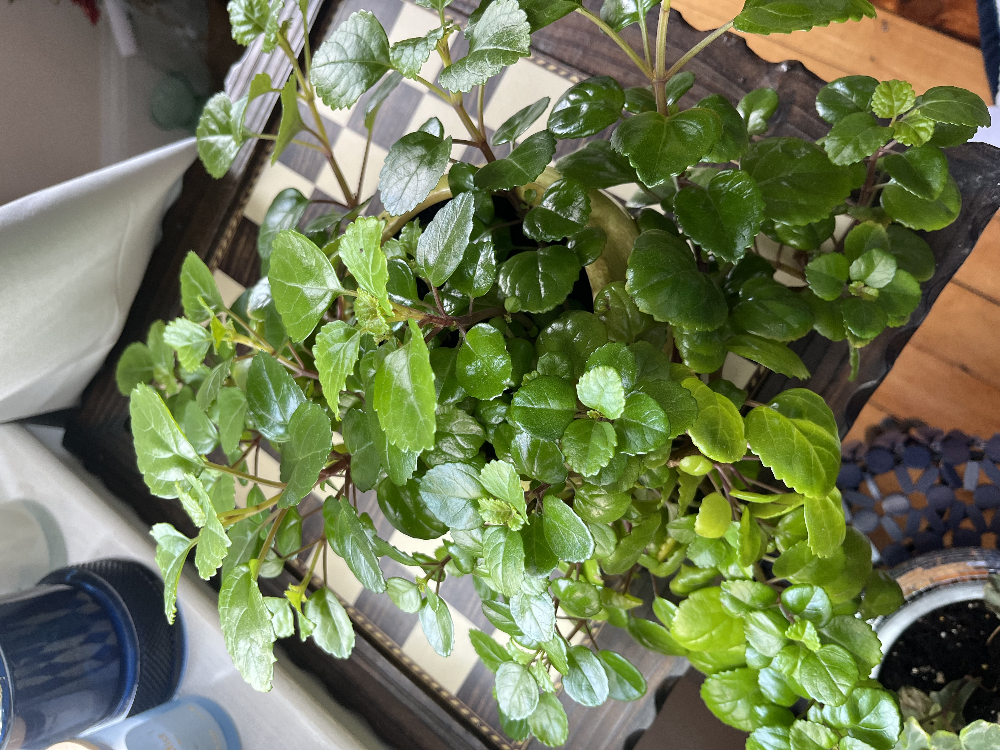
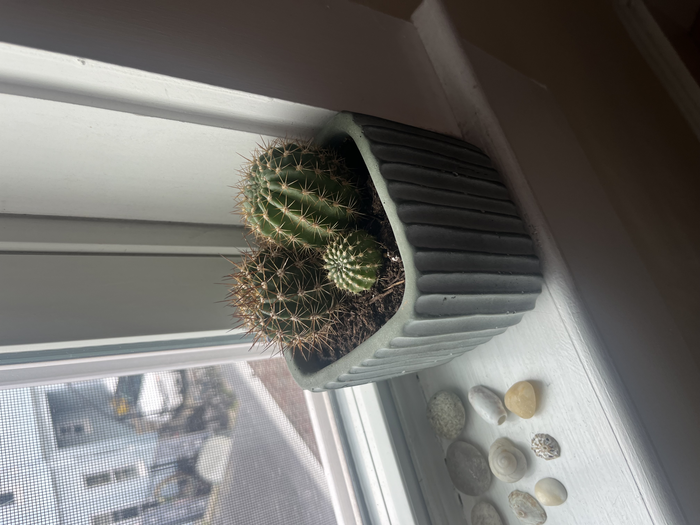
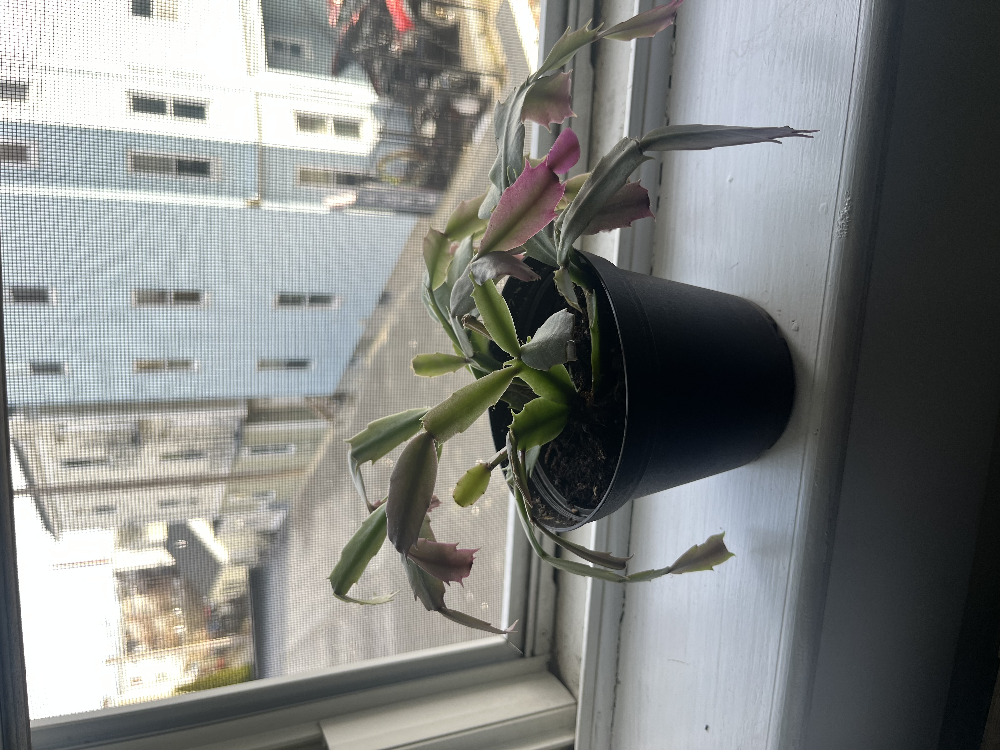
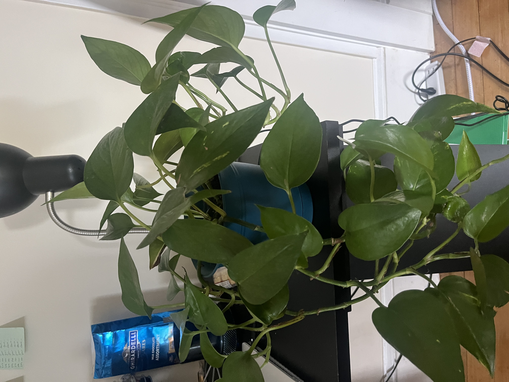

Swedish Ivy
Also known as Plectranthus verticillatus, is a glossy, green plant with round leaves and smooth rigid edges.
Golden Barrel Cactus
Also known as Echinocactus grusonii, is a short, round, spiky cactus.
Christmas Cactus
Also known as Schlumbergera, has matte green leaves with pink tips, and flowers pink flowers in the wintertime.
Pothos
Also known as Epipremnum aureum, has thick, waxy, green, heart-shaped leaves with a hint of yellow.
| Plant Name | Sunlight Type | Water Schedule | Additional Information |
|---|---|---|---|
| Swedish Ivy | bright, indirect sunlight | every 9 days | Swedish Ivy |
| Golden Barrel Cactus | bright, direct sunlight | every 30 days | Golden Barrel Cactus |
| Christmas Cactus | medium, indirect sunlight | every 14 days | Christmas Cactus |
| Pothos | bright, indirect sunlight | every 14 days | Pothos |